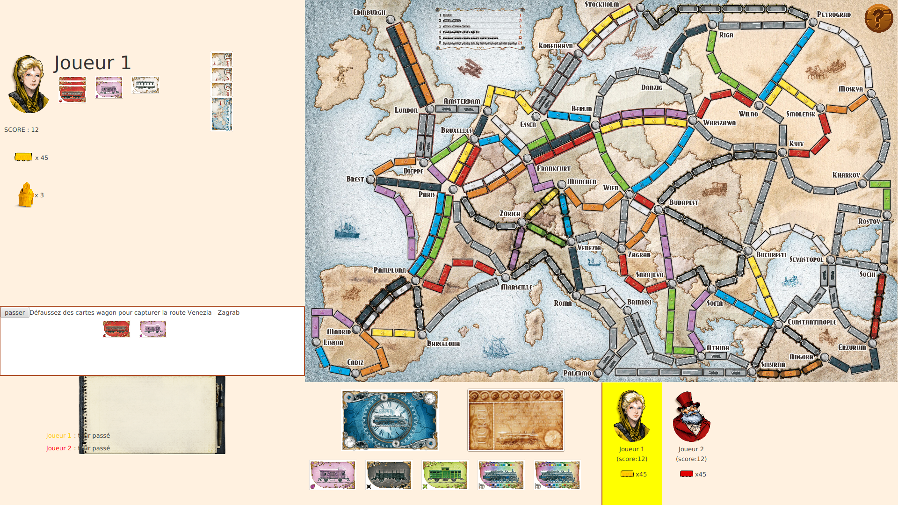

Copyright 2019 Reflux Design
Aventuriers du rail
 Dans le cadre de la SAE du second semestre de BUT, nous devions en binôme adapter le jeu de société “Les Aventuriers du Rail” en un jeu video javafx. Ce projet s’est fait en deux parties, la première nous devons coder la partie métier du jeu avec java, la seconde, nous avions à faire l’interface utilisateur à partir d’un code métier fonctionnelle.Partie développement
Cette partie était l’occasion d’appliquer l’ensemble des cours sur le développement objet avec le polymorphisme et l’utilisation d’array list pour pouvoir développer une vrai application java.Tests
Pour faire la partie métier du projet, on nous avait fourni une interface de base pour pouvoir tester plus facilement et ainsi trouver des bugs lors des parties tests. Parallèlement, on devait également écrire des tests unitaires pour vérifier de manière plus précise si nos méthodes fonctionnaient correctement.
Partie interface
Nous avons mis en place lors de cette phase ce que nous avons appris en terme d'ergonomie et de codage en javafx.Maquette
Avant de coder l’interface utilisateur du jeu, moi et mon binôme devions réaliser la maquette de l’interface en tenant compte d'autres projets du même type ainsi que des principes ergonomiques pour assurer une bonne expérience utilisateur.